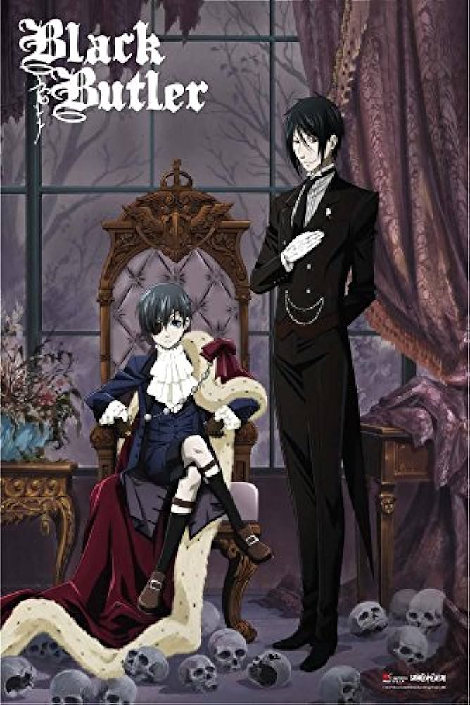

Rumy's Website
Black Butler (Japanese: 黒執事, Hepburn: Kuroshitsuji) is a Japanese manga series written and illustrated by Yana Toboso. It has been serialized in Square Enix's shōnen manga magazine Monthly GFantasy since September 2006. The series follows Ciel Phantomhive, the 12-year-old Earl of Phantomhive serving as the Queen's Watchdog. He is tasked with solving crimes in the underworld of Victorian-era London. Ciel has formed a contract with demon Sebastian Michaelis, who disguises himself as his butler, to seek revenge on those who tortured him and murdered his parents. In exchange for his services, Sebastian will be allowed to consume Ciel's soul.
In late-nineteenth-century England, the Noah's Ark Circus enlivens the city of London with their grandeur and spectacular stunts. However, children are mysteriously disappearing from the town in a manner correlating to the troupe's movement. The Queen, then, sends her notorious Watchdog, Ciel Phantomhive, on an investigative mission to retrieve the missing children. Ciel and his demon butler, Sebastian Michaelis, infiltrate the circus, disguised as team members, to study and possibly unearth its ulterior motive.
In March 2014, the AnimeJapan panel for Yana Toboso's Kuroshitsuji series unveiled a new promotional video. The video revealed that, aside from the new television series titled Kuroshitsuji: Book of Circus, an original video anime (OVA) titled "Kuroshitsuji: Book of Murder" was also in production.[4] The two-part OVA premiered in the fall of 2014